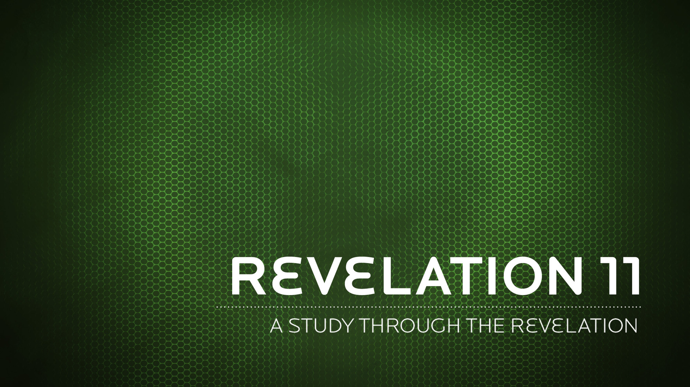

The mystery of the seven stars that you saw in my right hand and of the seven golden lampstands is this: The seven stars are the angels of the seven churches, and the seven lampstands are the seven churches.
Revelation 1:20 NIV
The rest of mankind that were not killed by these plagues still did not repent of the work of their hands; they did not stop worshiping demons, and idols of gold, silver, bronze, stone and wood–idols that cannot see or hear or walk.
Revelation 9:20 NIV
Nor did they repent of their murders, their magic arts, their sexual immorality or their thefts.
Revelation 9:21 NIV
The martyr-witness of the church, in other words, will succeed where the plagues have failed.
N.T. Wright
Then he said, “May the Lord not be angry, but let me speak just once more. What if only ten can be found there?” He answered, “For the sake of ten, I will not destroy it.”
Genesis 18:32 NIV
John, To the seven churches in the province of Asia: Grace and peace to you from him who is, and who was, and who is to come, and from the seven spirits
Revelation 1:4 NIV
Do not love the world or anything in the world. If anyone loves the world, the love of the Father is not in him.
1 John 2:15 NIV
For everything in the world–the cravings of sinful man, the lust of his eyes and the boasting of what he has and does–comes not from the Father but from the world.
1 John 2:16 NIV
The world and its desires pass away, but the man who does the will of God lives forever.
1 John 2:17 NIV